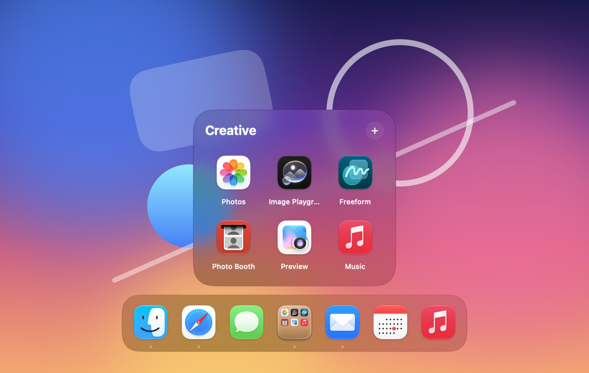
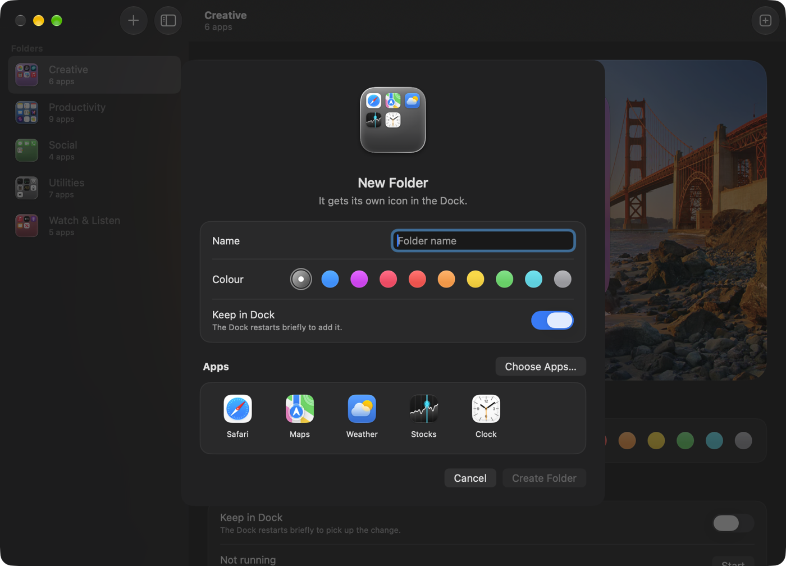
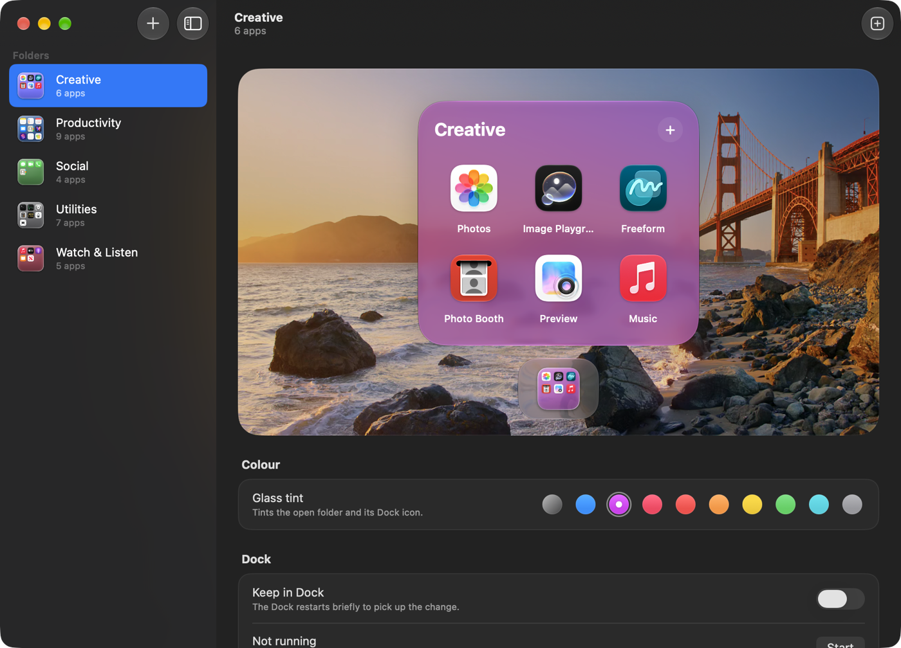
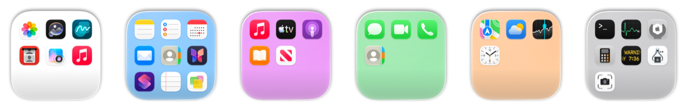

Liquid Glass, for real
Folders open on the same glass macOS uses, grow out of their Dock icon, and look right in light and dark mode.
DockFolder turns a group of apps into a single Dock icon. Click it and the apps open in a Liquid Glass grid, just like a folder on iPhone.
Free and open source · Version 0.2.0 · macOS 13 or later · Apple silicon and Intel

Features
Folders open on the same glass macOS uses, grow out of their Dock icon, and look right in light and dark mode.
Each folder's icon is a little glass tile showing the apps inside. Drop an app on it to add it.
Nine apps a page, swiped like on iPhone, up to three pages. Or up to 36 apps at once in a 6 × 6 grid.
Make folders, preview them over your desktop picture, and rename, recolour, update or delete them.
Clear glass, nine ready-made tints, or any colour you pick. The open folder and its Dock icon change together.
MIT-licensed Swift with no private APIs, no Accessibility access and no background helpers. Your Dock stays as it is.
Make
Click +, give it a name and a colour, and drop in some apps. DockFolder adds it to your Dock and draws its icon while you choose.

Manage
Every folder gets a live preview on glass over your desktop picture. Drag apps around to rearrange them, drag apps up from your Dock to move them in, or change its colour and name.

Colours
Clear glass, a ready-made tint, or any colour you like, from the open folder to its Dock icon.

How it works
Open DockFolder, click +, and pick a name, a colour and some apps.
The folder appears in your Dock with a live preview of what's inside.
The folder opens above its icon. Click an app to launch it; press Esc or click elsewhere to close.
Install
Open the disk image and drag DockFolder onto the Applications folder next to it.
DockFolder isn't notarized by Apple, so macOS asks before it opens it. If you see a message that macOS couldn't verify DockFolder, click Done, open System Settings › Privacy & Security, scroll down and click Open Anyway. You only do this once.
Prefer Terminal? This does the same:
xattr -dr com.apple.quarantine /Applications/DockFolder.app
Click + in the DockFolder window. Your folders are kept in ~/Applications/Dock Folders.
Needs macOS 13 Ventura or later, on Apple silicon or Intel. Liquid Glass needs macOS 26 or later; earlier versions get a frosted blur instead.
FAQ
No. Each folder is a regular Dock icon, so your Dock keeps working exactly as before. Move folders around, or take them out, like any other app.
Click the folder's icon to open it, then drag the app up out of the Dock onto the folder. When the Dock shows Remove, let go: the app moves into the folder and leaves your Dock. In the DockFolder window you can also drag an app from the Dock shown under the folder up into it.
With pages, 9 apps a page and up to 3 pages: 27 apps. With the grid, up to 36 apps on one page. Pick the layout when you make a folder, or change it later in the DockFolder window.
That's how a folder gets its own icon and its own place in the Dock without changing the Dock itself. Folders are tiny copies of DockFolder, and each one keeps its own list of apps.
The Dock only reads its list of apps when it starts. Adding a folder to the Dock, renaming one that's in it, or removing one restarts the Dock for a moment.
A running folder is an app like any other, so it appears in the app switcher. Hiding folders from ⌘-Tab is the next big step on the roadmap.
The first time a new or updated folder opens, macOS checks it, and that can include an online lookup. On a slow network the first launch can take up to a minute or so. After that, folders open instantly.
Delete your folders in the DockFolder window (they go to the Trash), then drag DockFolder from Applications to the Trash. Folder settings live in ~/Library/Application Support/DockFolder.